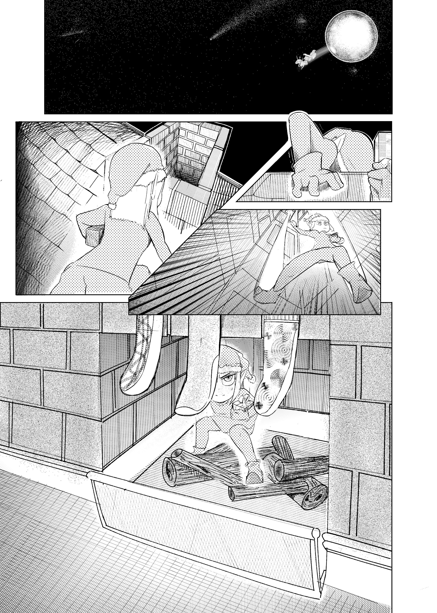
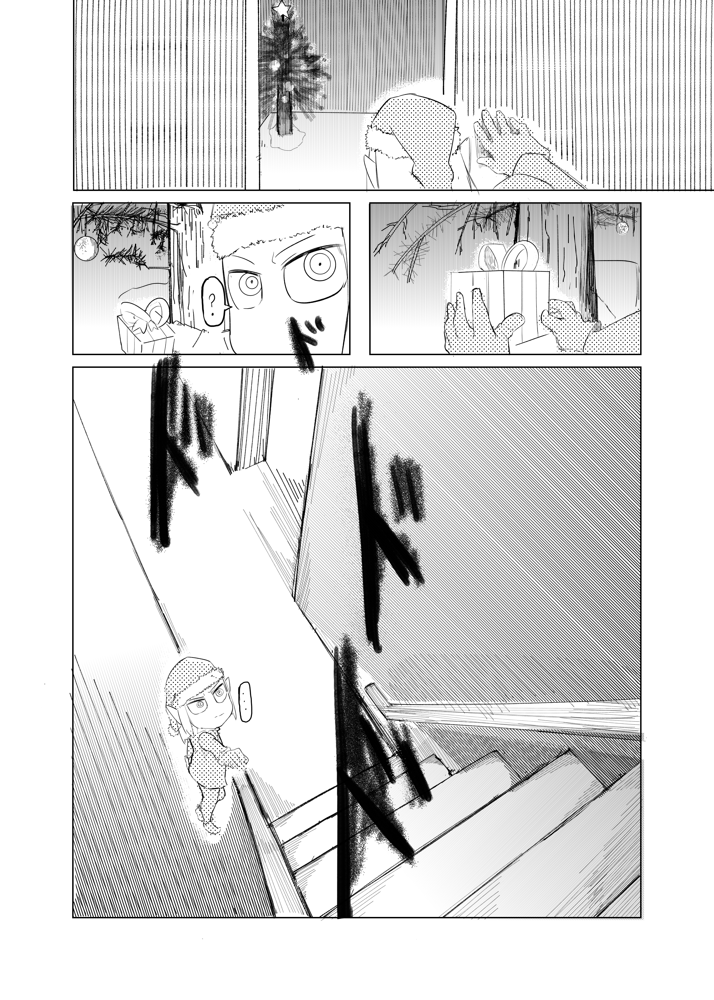
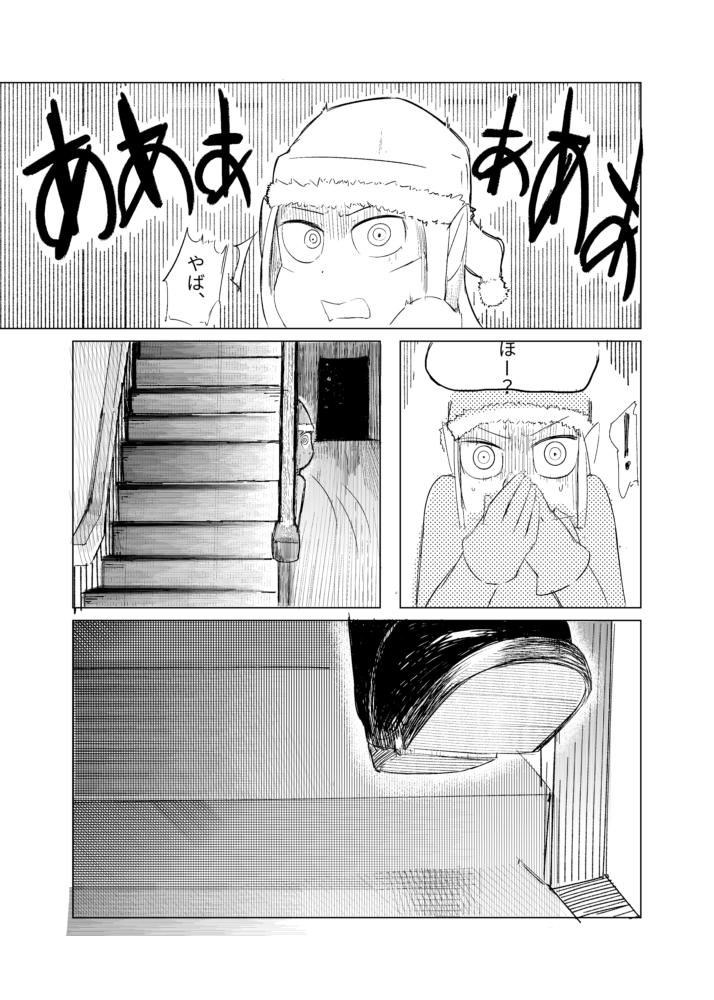
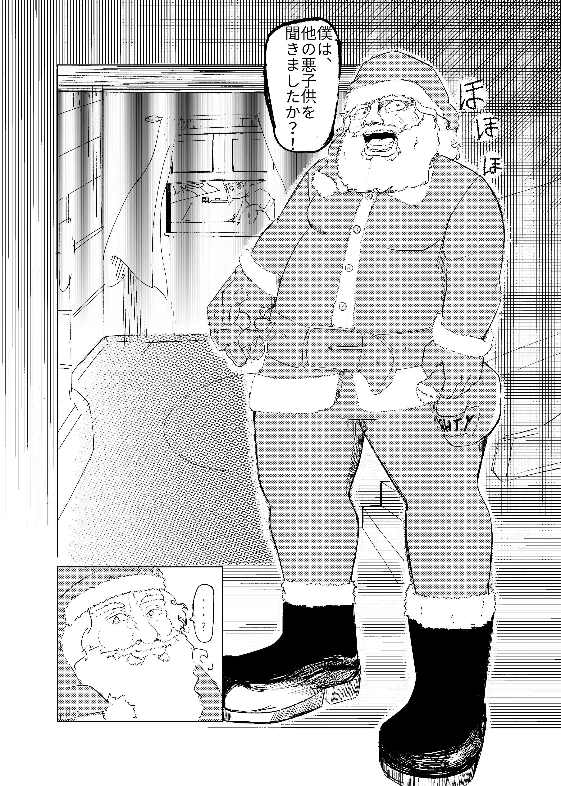
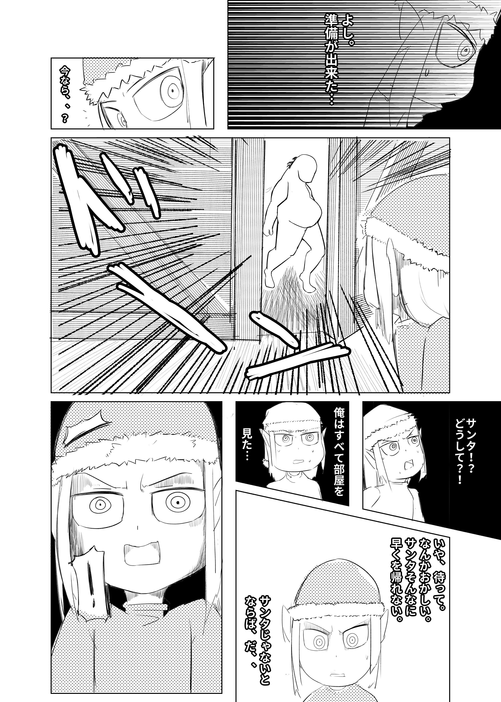
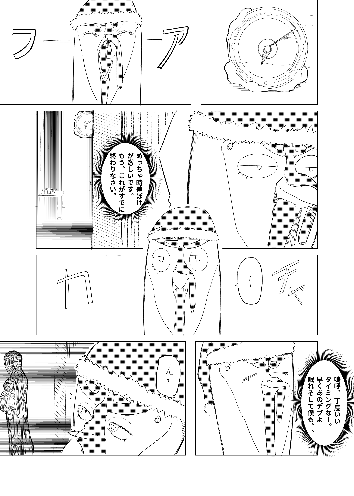
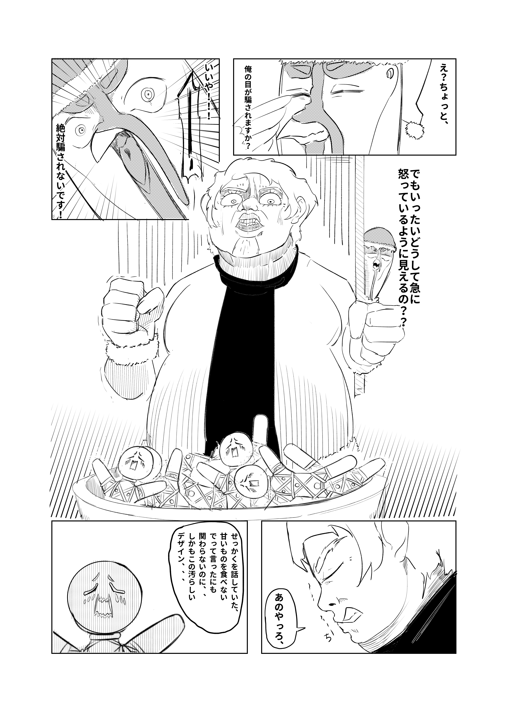
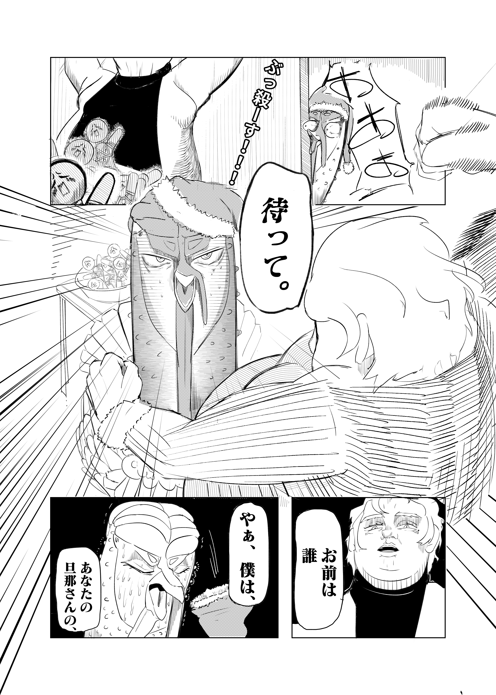
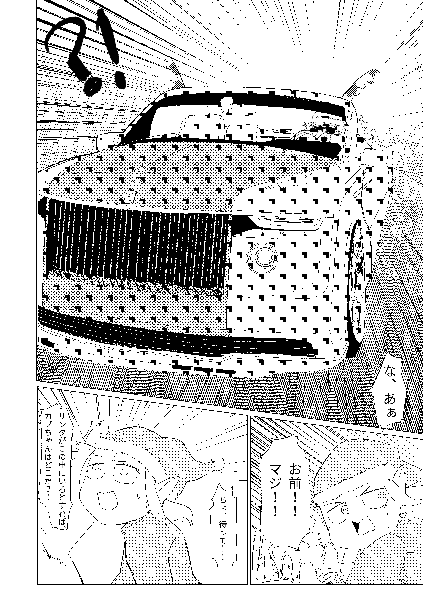

year, I started on my own original manga, or Japanese comic, as I tried to enter one of the contests that was coming up at the end of the year. Unfortunately, I made too many mistakes and ended up scrapping my work. It was not all bad, as I learned from my mistakes and I know what to do and what to look out for in my next project.
   The total time it took to make this entire one-shot was a little over 3 months, with a few breaks here and there, and on my days off of work. I knew from the very beginning I was going to have some problems with drawing backgrounds since I didn't have much experience as I did with drawing characters. The story also changed as I drew out the rough draft of the one-shot. Most of the story was going to be short, but I started thinking about the plot holes and other things the readers and judges might question as they continued reading throughout the story. The original story was going to be a 20 something paged gag comic about an elf and their adventures with their friends, what was then fleshed out into an over 50 paged story about how they and their friends plan to free their fellow elf family from Santa, who chases the elf from the north pole into New York City, where the elf meets another friend who helps them defeat Santa which ultimately led to a happy ending.
   This was the first time I made a full 50 something paged one-shot, or short story comic. The goal was to test how far I've reached with my abilities as an artist and what parts I needed to work on if I wanted to continue getting better and making it look as professional as the ones I see in my favorite series.

 return to home page
return to home page